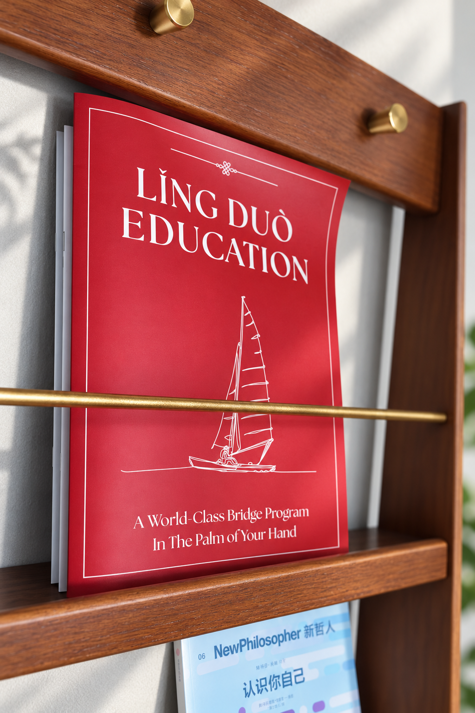

ABOUT LING DUO
关于 Ling Duo
领舵是一所扎根于温哥华与广州的创新型教育机构。自2015年起，我们一直在探索：怎样的教育，能帮助孩子更好地面对 AI 时代？
变化越快，越要投资不变的东西。我们专注于培养孩子最基础、也最经得起变化的能力——听说读写与思辨。随着人工智能的发展，获取知识越来越容易。知识本身已不再是人最重要的资产，思考和判断的能力才是。
独立思考，是孩子认识自己、找到人生方向的开端。判断力，也是孩子能够让 AI 为自己所用，而不是被它牵着走的前提。
我们的校友在哈佛大学、哥伦比亚大学、多伦多大学、英属不列颠哥伦比亚大学及德国马克斯·普朗克研究所等机构继续学习与研究。我们希望年轻人收获的，不只是漂亮的简历与成就，更是对自己的认识、对人生意义与使命的探索，以及忠于自己、自主选择人生道路的能力。
如果您想进一步了解领舵，欢迎来我们的公益电影之夜 Ling Duo Night 坐坐。每周日晚上7–9点，我们与老师、家长及不同年龄的朋友一起看电影，分享观点与生活经验。活动面向公众，免费参加，无需专业背景。也特别欢迎您带家人一起来，让不同世代在同一个屋檐下，耐心交流。
参加 Ling Duo Night
添加 Emma 的微信，告诉我们您想参加电影之夜即可。
微信号：Zhong_manlin
